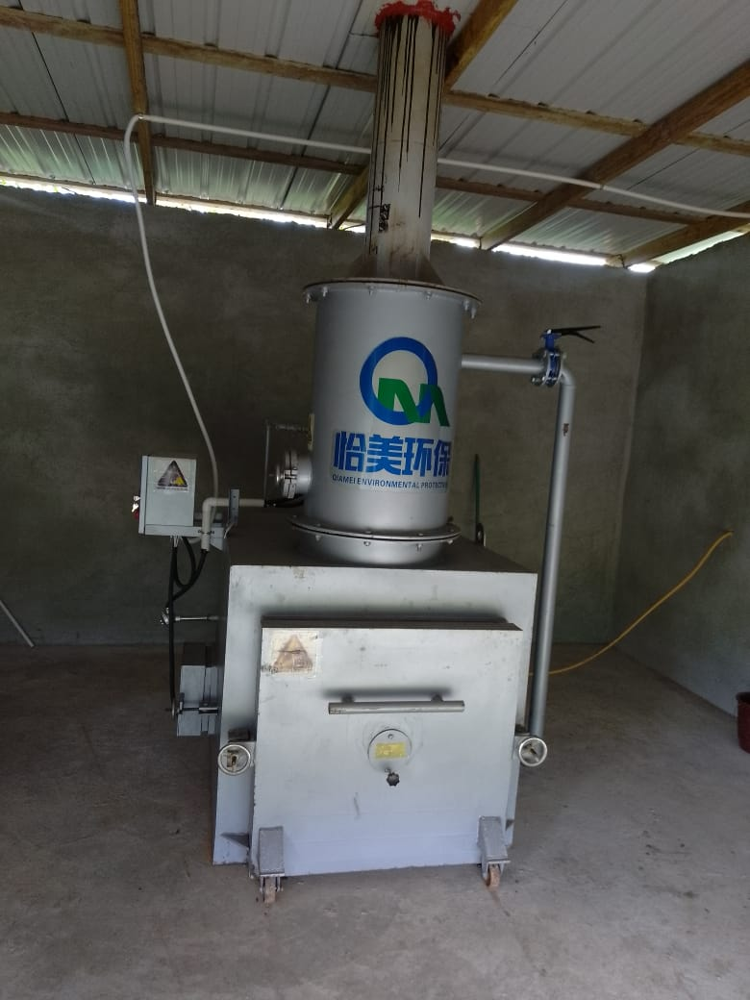

Comprehensive Pet Care (1-3 days)
Ensure your pet’s health with thorough check-ups, tailored to detect and prevent illnesses early.
Advanced Pet Surgery (1- 5 hrs)
Expert surgical care for your pets,utilizing state-of-the-art technology for optimal outcomes.
